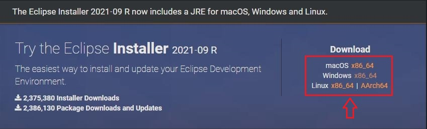
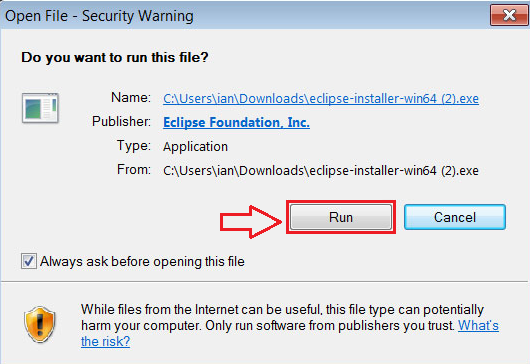
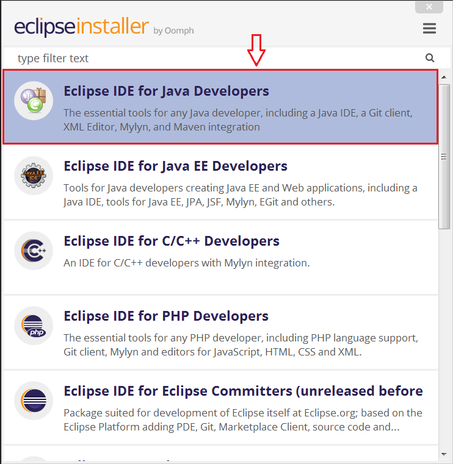
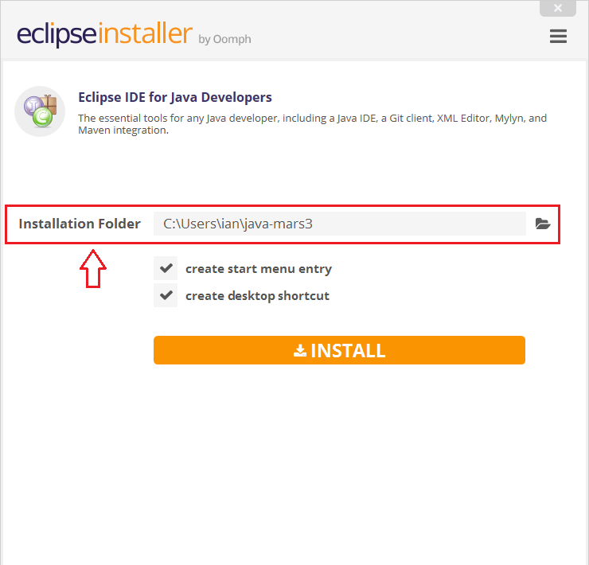
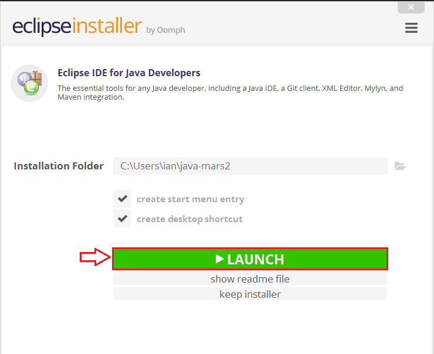

Начало
Тестване
Отдел
Контакти
Автоматизация
Упражнения
Eclipse IDE
Изтегли Eclipse IDE тук
I. След отваряне на връзката за сваляне на компилатор, избери от трите варианта, предложени в сайта:
За операционна система "Mac"- изтегли: macOS x86_64.
За операционна система "Windows"- изтегли: Windows x86_64.
За операционна система "Linux"- изтегли: Linux x86_64| AArch64.

II. Отвори изтегленият файл, който е съхранен в папка "Downloads" на твоята машина.
След отварянето му на екрана ще се визуализира предупреждение за сигурност (Security Warning),
в което има бутон "Run". Натисни бутон "Run".

III. Избиране на пакет.
След успешно инсталиране "Eclipse" ще предложи няколко варианта на компилатора.
За целите на автоматизираните тестове избери пакет "Eclipse IDE for Java Developers".

IV. Избиране на папка за инсталиране на "Eclipse".
Добра практика е "Eclipse" да бъде инсталиран в отделна папка, в която да бъдат съхранени всички инсталационни файлове както на самия "Eclipsе", така и за последващи библиотеки и класове.

V. Стартиране на "Eclipse".
След упешна инсталация на екрана ще бъде показан интерфейс, в който се намира бутон "LAUNCH".
Натисни бутона и "Eclipse" ще се отвори.
Приятно кодиране!
